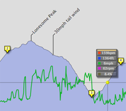
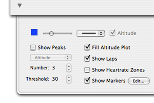
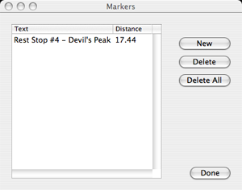

Adding Markers to an Activity
Markers can be used to indicate significant milestones during the activity.

The controls to display and edit markers are in the Activity View's settings drawer:

To add a marker to the activity view:
- Position the current location (yellow ball) to where you want to insert the marker by clicking the activity view
- Click the disclosure triangle at the lower left corner of the view to make the settings drawer open
- Push the "Edit..." button next to "Show Markers". The "Add Marker" box will appear
- Push the "New" button. A new marker is inserted at the current location
- Edit the text for the marker by clicking it and entering the text
- Push the Done button. The new marker should appear in the Activity View
